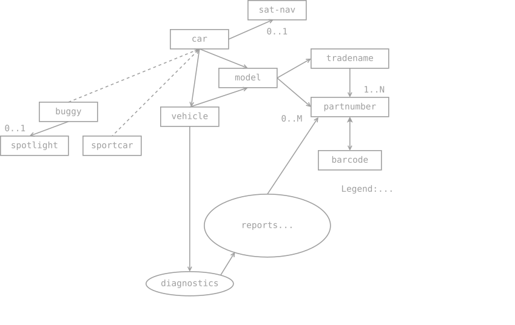
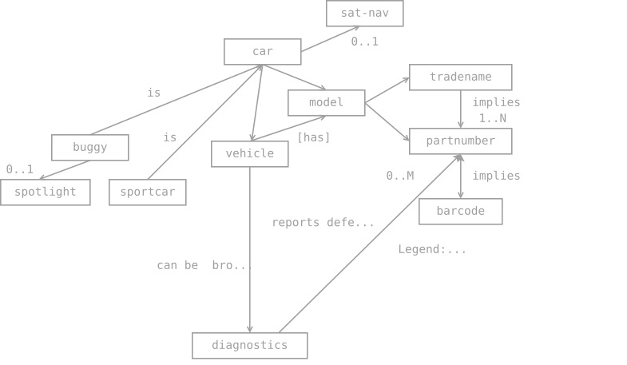
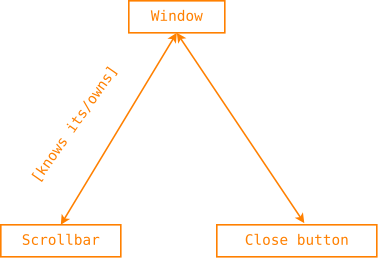
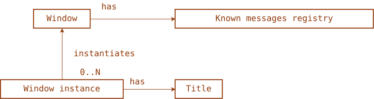
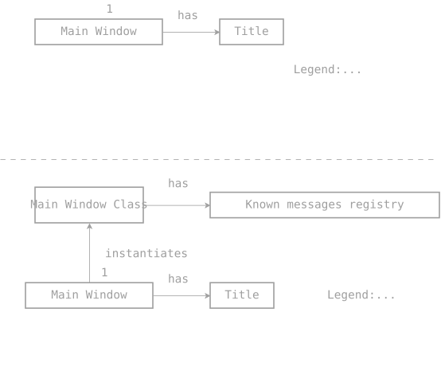
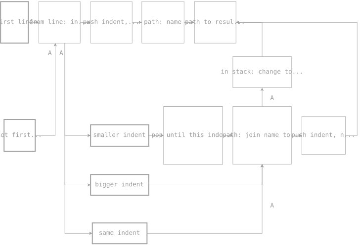
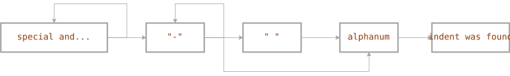
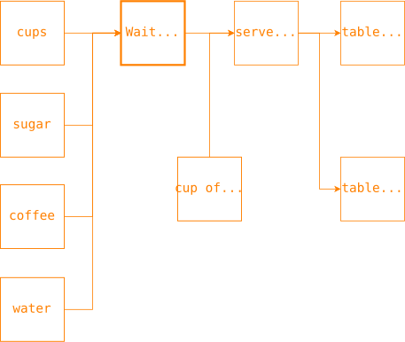
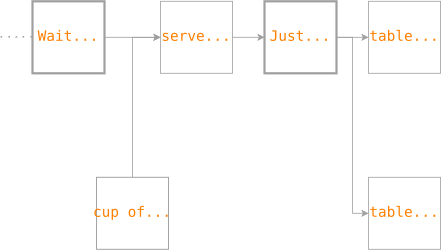

Simple Diagrams
Table of Contents
My simplification of existing diagrams
There are many diagramming standards. Different diagrams serve different purposes. Diagrams are a language, albeit a visual one. Unlike most programming languages, they can often describe more than just a program. Well-known and fairly good diagramming standards are:
- OPM
- Grafcet
- JSP
- ERD
- FlowChart
- FlowProcess
- N2
- NS
- UML…
Some are clear, easy to learn, and enjoyable to use. Others are complex and unintuitive. The main idea of diagrams is to present information in a language that's easy to read so you can quickly find the information you need: no need to read lengthy texts or try to understand the intricacies of programming language semantics. Most diagramming standards, however, require time to learn.
I decided to develop diagrams that are as simple, clear, and useful as possible. I identified several types of diagrams:
Diagrams | +-- Structural Diagrams | | | +-- Conceptual Structural Diagrams | +-- Algorithmic Diagrams
When creating them, I followed the following idea: diagrams should be like maps: they should help find a path to the information/details you're interested in - people understand maps; they're simply a flat path.
Structure diagram
It depicts concepts in rectangles. In a program, these could be classes, structures, records. Concepts depend on each other; they are logically related, and this is represented by arrows. Solid arrows represent relationships such as "has" and "owns." Dashed arrows represent relationships such as "is" or "is" (inheritance). Relationships have a direction, which is logical. But it's important to understand that relationships have a direction in my diagram type because my diagrams are maps, and the direction of a relationship/arrow is the path available to get data from one concept to another!
For example, if you know the model of a car, you can follow the arrow and determine/find what engine that model has. If the arrows are bidirectional, this means you can get information from one concept to another, and you can get information about the first from the second. This isn't always true. For example, you can't identify a buggy by knowing its headlights, since they could be used on other buggies as well. Of course, the example drawn in the diagram is very schematic and doesn't reflect the real nuances of the subject area.
In ellipses, processes are represented by arrows associated with processes, interpreted as "input," "submitted for processing," "output," and "is a product." Arrows can have arity; for example, a car may or may not have a satellite navigation system, meaning it has (solid arrow) 0 or 1 SAT-NAV system. This can be represented as 0..1 or 0/1. Arity can be different, for example, a car has exactly 4 wheels. By default, the arity is 1.
The diagnostic report generation process generates a list of problematic car parts that need to be replaced, ranging from zero (no problems) to a reasonable number. Yes, we believe diagnostics is smart enough for this.
Here's the diagram:

Conceptual structural diagram
Another type of structure diagram is the conceptual structure
diagram. It's very similar to the previous one, but it hides
implementation details and isn't concerned with programming. It
instead reflects concepts and their relationships more semantically,
conceptually, and abstractly, without specifying inheritance or
aggregation (inclusion as part of itself). Therefore, it doesn't have
dotted lines; all the lines are the same - they are simply relationships
between concepts and processes. However, the relationships are
labeled - this is their semantics. It must correspond to the
directions. When this label is in square brackets, like [has],
it's the default relationship, and unlabeled relationships are
implied. Otherwise, everything is the same:

Structural diagrams describe a subject area, the concepts within it, how they are related, how one can be learned from another, and how to work with this information.
This diagram has semantics, for example, from it you understand that a buggy is a type of car, but it does not impose on you how you will represent this relationship - as inheritance or implicit aggregation.
Processes can be shown also as terms, in the end - they are: this diagram avoids implementation details (as implementation, processes calso can be classes, but it's important to think about terms, drawing the conceptual diagram).
It's free of redundancy - the fact that a buggy has the same engine, model, and perhaps even a single satellite navigation system isn't repeated in a buggy. To figure this out, if you "own a buggy," you "go" to the more basic concept of "car" and see what information is available for any car (including buggies). A buggy may also have unique information, such as a spotlight. And it's impossible to claim that it's typical for any car.
Variations
If there is a bidirectional relation, name of it from one side and
another one can be different, it can be represented as A | B or
A / B where A is how it's called from the side of that A:

The brackets show that this relation name is used as the default relation (where there is no name at all). It can be read as:
- "Scrollbar knows its Window"
- "Window owns Scrollbar"
- "Close button knows its Window"
- "Window owns Close button"
Another situation: some term/notion has some attribute sharing its value with all instances of this term/notion. In programming it's called class variable. Here, it is some registry of known messages that a window (any of this type/class of windows) can handle.
And instances also have their own, individual values-attributes (instance variables):

So, usual structural diagram covers it as well. The relation between
the class and its instance usually is from an instance to a class: we
can determine the class of the object. Looking at the name John we
determine that it's a male from English-speaking country (its class),
usually classes don't store their instances, so the direction of the
arrow is from the instance to the class and its caption is
"instantiates" (particular window object instantiates general/abstract
term "windows"). The arity is 0..N which means: "a particular object
of windows instantiates this concept 0 to N times". Anyway, 0..N is
the number of objects "Window instance" in this relation. This arity
here can be skipped sure (preferred), but if it's singleton then
it must be shown as 1 if the diagrams shows both - the class and
its singleton separately. Another option could be to write 1 near
the class but not close to an arrow.

Another option is to write a type of the relation in math sense
(instead of an arity), like bijection: implies. More about it.
Important: the main idea of the structural diagrams
In essence, these diagrams are a distillation of semantic networks and ERD diagrams. Try to see it as a knowledge map that leads you from known knowledge to the unknown.
You have not draw all attributes of objects like in ERD: you draw only attributes needed to reach some goal, if your map is dedicated, focused on some goal. For ex, a map/diagram can illustrate how to find a salary of employees. Draw only attrobutes helped to reach a salary.
Algorithmic diagrams

The principle is the same - it's a map (more on that later). This type of diagram depicts an algorithm: conditions and actions. The rectangles outlined with a thick line represent conditions that "act" like road signs: you must obey them, otherwise you can't pass them. The remaining rectangles represent actions. This diagram is read intuitively: like a map, you follow the arrows, and to get somewhere and perform an action, you "pass" through "road signs" if you satisfy them. For example, if you encounter a "smaller indent," you can pass that sign. Otherwise, you're left with one of the "bigger indent" signs, or the "same indent," and you choose the one whose condition you satisfy and follow its path (the path it's on).
If you satisfy the "smaller indent," your next "stop" is "pop until this indent (including it)" - you fulfill its instructions.
Looks like a child's game!
Looking at this diagram, you can see that the "path to result" is the final stop; you can't "leave" it. In principle, it could also be marked, for example, with a different line thickness.
Some "roads" are combined, so to help you navigate, routes are indicated on them, for example, as letters. For example, route "A":
same indent -> path: join name to full path from stack names -> in stack: change top name
while "smaller indent" and "bigger indent" will go through "push indent, name" - they have an unnamed route (to avoid cluttering the map).
Elsewhere, another route uses the same letter "A":
not first line -> from line: indent, name -> smaller indent/bigger indent/same indent
The beginning is also obvious: first line/not first line, and since processing begins from the first line, it is even more precise - the beginning is "first line."
An algorithm map resembles a game of Monopoly or something similar. If you haven't yet guessed the inspiration for the algorithm diagram, take a look at this algorithm:

In essence, these are modified syntactic diagrams.
In the last diagram, the thick rectangles are "road signs" (conditions).
It's read like this:
if we see a special character, a space, but not "-", we take that road, looping in the first rectangle.
Because when we see the character, we exit the rectangle and see a fork in the road.
The first rectangle is a turn back, and the second is "-". If we see the same character again, we follow the sign back (a loop). To take the straight road, we need to encounter the character "-" in the string. After "-", there's a triple fork: loop if we encounter "-" again, then go straight ahead if the next character is a space, otherwise (neither one nor the other) - down to alphanum.
After a space, we expect alphanum - we must match this character; there are no alternatives (although an alternative path to the error could have been drawn, but it's usually not drawn in syntax diagrams, and even here it's clear from the context).
As you can see, these diagrams are simpler than FlowChart or DRAKON, and more important: they are so intuitive that you don't need time to learn them - compare it with UML!
Grafcet-like diagrams
These algorithmic diagrams can be used also in Grafcet style:

we even can try to add tokens… In this diagram serving of coffee happens only if everything required was provided - so we have the condition "Wait for all" (like traffic sign!). We drew it separately from "serve coffee to all" because we have another route to it: "cup of coffee" ready for consumption. Else - we can write the text "Wait for all" (or similar) directly inside the rectangle "serve coffee to all".
So, when all inputs will be ready - serving starts. "Wait for all" also reminds us some route/road/map related objects, for ex, bus stop: it's a place where people gather, it can work as "if more than 10 persons came, we start". In Grafcet it's Convergence in AND element of diagrams.
Then "serve coffee to all" serves coffee to 2 tables: simultaneously. And this is the same as Divergence in AND in Grafcet diagrams.
We can draw Divergence in OR element too:

where only one of 2 tables will be served. Kind of optimization of waiters work :) The rectangle "Just one of" can be more complex "traffic sign", for ex, it can explicitly declares the condition of choice.
I think, it's easy to extend it more, including add of tokens for Petri nets.
Why do we need diagrams?
Try starting your algorithm development with a diagram: you'll spot all the errors right from the start, and the implemented algorithm will be almost error-free.
Diagrams also help you write code faster: you see it from above, on a two-dimensional map, easily identifying where you can go next and what data you need to achieve your goal.
Think in terms of maps.